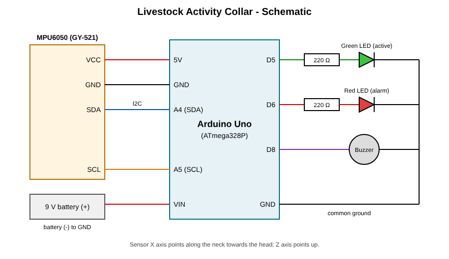
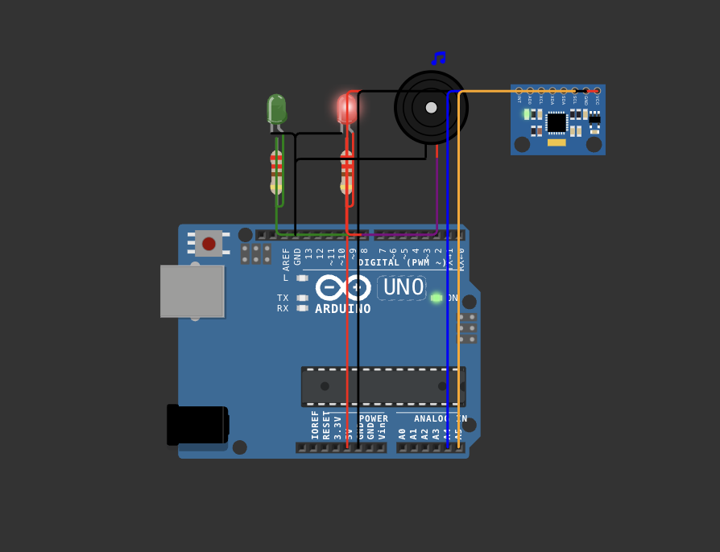

Arduino-based monitoring of animal behaviour
Name: Nazar Smatov
Supervisor: Tauheed Khan
Course: ELT.123 Electronic Components and Circuits
Application: precision livestock farming
Real-time applications

| Component | Role |
|---|---|
| Arduino Uno | Controller |
| MPU6050 | 3-axis accelerometer, I2C (A4, A5) |
| Green LED, D5 | Animal is active |
| Red LED, D6 | Inactivity alarm |
| Buzzer, D8 | Audible alarm |
| 2 × 220 Ω | LED current ≈ 14 mA |
| 9 V battery | Power |
| Item | Status |
|---|---|
| Schematic and firmware | Done |
| Classifier test on PC, synthetic signals | 600 / 600 windows correct |
| Wokwi: compiles, runs, resting and alarm | Done |
| Wokwi: walking and grazing | Not yet |
| Real hardware and real animal | Not yet |
The PC test checks the algorithm on generated signals. It is not the accuracy on a real animal.

Wokwi simulation: inactivity alarm active
Code, schematic and report: github.com/Cabbie227/livestock-activity-collar